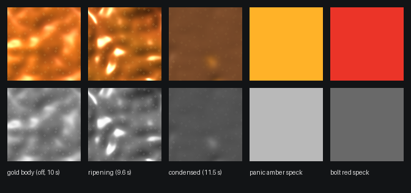
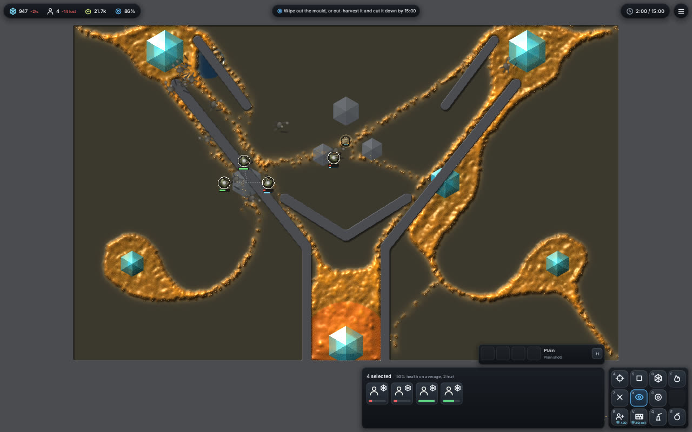
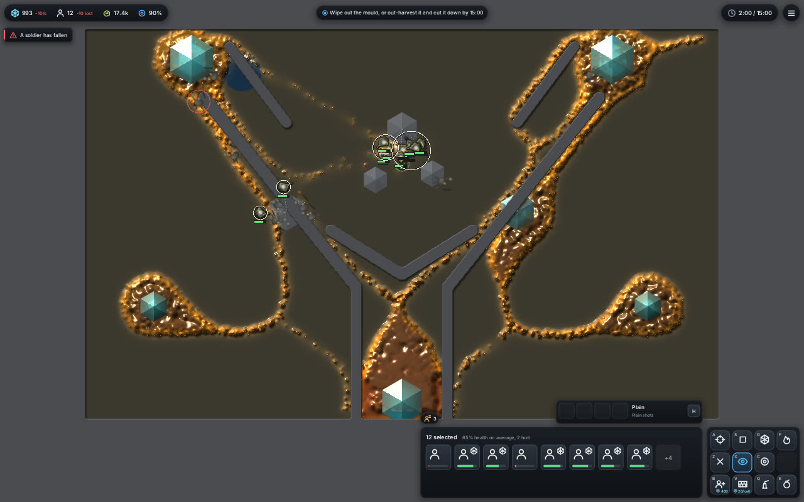
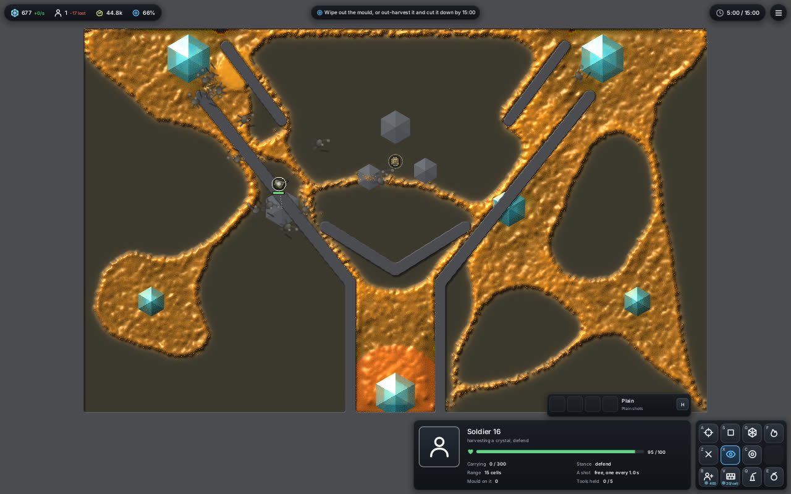
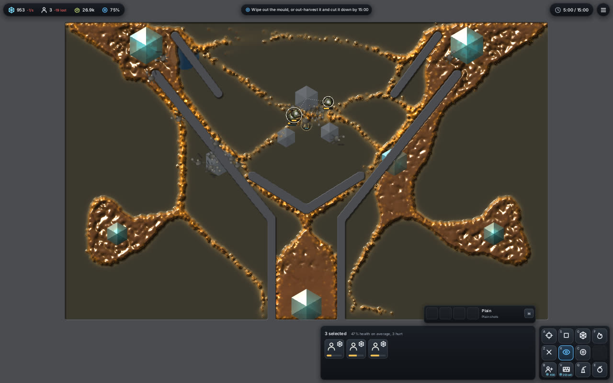

<title>Dense slime condenses</title>
<meta name="claude:viewport-fit-sides" content="cover">
<link rel="stylesheet" href="https://fonts.googleapis.com/css2?family=Space+Grotesk:wght@500;700&family=Inter:wght@400;600&family=JetBrains+Mono:wght@400&display=swap">
<style>
/* Layout: one dark column, the clip first, then off/on pairs with counts beside each picture */
:root {
  --bg: #0f1210; --panel: #171c19; --fg: #e6ebe7; --muted: #9aa69f;
  --copper: #c08a5a; --line: #2a322d;
  --display: "Space Grotesk", system-ui, sans-serif;
  --body: "Inter", system-ui, sans-serif;
  --mono: "JetBrains Mono", ui-monospace, monospace;
  color-scheme: dark;
}
body { background: var(--bg); color: var(--fg); font: 15px/1.55 var(--body); }
main { max-width: 1040px; margin: 0 auto; padding-block: 32px 56px;
  padding-left: max(16px, env(safe-area-inset-left, 0px)); padding-right: max(16px, env(safe-area-inset-right, 0px));
  display: grid; gap: 36px; }
h1, h2 { font-family: var(--display); text-wrap: balance; margin: 0; }
h1 { font-size: 2rem; } h1 span { color: var(--copper); }
h2 { font-size: 1.2rem; }
p { margin: 0; max-width: 66ch; }
.lead { color: var(--muted); }
section { display: grid; gap: 14px; }
video, img { width: 100%; max-width: 100%; display: block; border-radius: 6px; border: 1px solid var(--line); }
.pair { display: grid; grid-template-columns: 1fr 1fr; gap: 16px; }
@media (max-width: 640px) { .pair { grid-template-columns: 1fr; } }
figure { margin: 0; display: grid; gap: 8px; min-width: 0; }
figcaption { font: 13px/1.45 var(--mono); color: var(--muted); }
figcaption b { color: var(--fg); font-weight: 400; }
.on b { color: var(--copper); }
ul { margin: 0; padding-left: 1.2em; max-width: 66ch; display: grid; gap: 6px; }
code { font-family: var(--mono); font-size: 0.9em; }
.tbl { overflow-x: auto; }
table { border-collapse: collapse; font: 13px var(--mono); font-variant-numeric: tabular-nums; }
th, td { padding: 6px 12px; border-bottom: 1px solid var(--line); text-align: right; white-space: nowrap; }
th:first-child, td:first-child { text-align: left; }
</style>
<main>
  <header style="display:grid;gap:10px">
    <h1>Dense slime <span>condenses</span></h1>
    <p class="lead">Where the slime packs tight or keeps feeding on a crystal for 10 seconds, half of it is absorbed into the rest, which turns a deep bronze: each bronze walker takes two hits, bites twice and costs twice the upkeep. Fork map, seed 1, farm hand, shape C, software Vulkan. Everything shown is the walkers' own state.</p>
  </header>

  <section>
    <h2>One patch turning, zoom 12</h2>
    <div class="pair">
      <figure><video src="turn-z12-1x.mp4" controls muted loop playsinline autoplay></video><figcaption>Normal speed · 9.0 to 11.8 s, every game step · <b>24,759 walkers at 9 s, 18,773 at 10 s</b></figcaption></figure>
      <figure class="on"><video src="turn-z12-half.mp4" controls muted loop playsinline autoplay></video><figcaption>Half speed · the same frames</figcaption></figure>
    </div>
    <p>The body warms as it ripens, then turns in one step at about 10 s. For half a second each absorbed walker is a warm-white streak pulled toward the condensed walkers round it, and the cells where many were absorbed in the last 0.3 s glow warm-white. Then it cools into the bronze. A survivor's speck flares for 0.4 s.</p>
  </section>

  <section>
    <h2>Value check</h2>
    
    <p class="lead">Mean luma from real frames: gold body 138, ripening 121, condensed 84. The panic amber speck is 185 and the bolt red is 105. Condensed slime is told from panic by value and shine, not hue.</p>
  </section>

  <section>
    <h2>The whole start blob, zoom 7</h2>
    <video src="transform.mp4" controls muted loop playsinline autoplay></video>
    <p>The start blob on the home crystal, 6 to 30 s of game time, a frame every half second at zoom 7 (3x speed). It warms from the crystal outward as walkers ripen, turns at about 10 s (24,871 walkers at 6 s, 18,773 at 10 s), then sits as a darker, raised bronze body.</p>
  </section>

  <section>
    <h2>Two minutes in</h2>
    <div class="pair">
      <figure><figcaption>Off · <b>21,727 walkers</b> · 4 soldiers</figcaption></figure>
      <figure class="on"><figcaption>On (condense 300, crowd 20) · <b>17,434 walkers</b></figcaption></figure>
    </div>
  </section>

  <section>
    <h2>Five minutes in</h2>
    <div class="pair">
      <figure><figcaption>Off · <b>44,806 walkers</b> · squad of 1 · covers most open ground</figcaption></figure>
      <figure class="on"><figcaption>On · <b>26,904 walkers</b> · squad of 3 · bronze lobes on the crystals, thin tubes between</figcaption></figure>
    </div>
  </section>

  <section>
    <h2>Walkers over the game</h2>
    <div class="tbl"><table>
      <tr><th></th><th>1:00</th><th>2:00</th><th>3:00</th><th>4:00</th><th>5:00</th></tr>
      <tr><td>off</td><td>28,274</td><td>21,727</td><td>29,628</td><td>37,725</td><td>44,806</td></tr>
      <tr><td>on</td><td>17,147</td><td>17,434</td><td>24,072</td><td>27,613</td><td>26,904</td></tr>
    </table></div>
    <p class="lead">One seed and one hand, so this shows the shape of the change, not balance. Walkers, not mass: a copper walker holds two walkers' worth.</p>
  </section>

  <section>
    <h2>How it reads on screen</h2>
    <ul>
      <li>A ripening walker warms toward the bronze as its ripeness climbs, so a body heats before it turns and cools again if it stops being ripe.</li>
      <li>An absorbed walker's slot keeps where it died for 0.5 s. The view draws it as a streak toward the centre of the condensed walkers in the 9 x 9 cells round it. Fresh absorptions light their cells warm-white for 0.3 s.</li>
      <li>A condensed body is deep bronze-brown with near-full gloss, a steeper and taller edge, by the share of its mass condensed. A broken walker (shot, blast, withered, starved) goes back to the ordinary colour.</li>
      <li>Frame cost on llvmpipe, 40 game seconds of the farm hand: frame p50 63.6 ms off, 64.8 ms on (+1.9%). The 1070 is not measured.</li>
    </ul>
    <p class="lead">Off by default; <code>condense=300</code> or the start menu's Condense option turns it on. Branch <code>claude/project-thread-p9ctba</code>.</p>
  </section>
</main>
